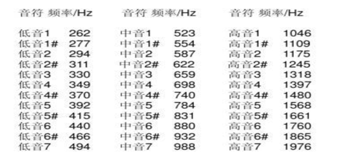
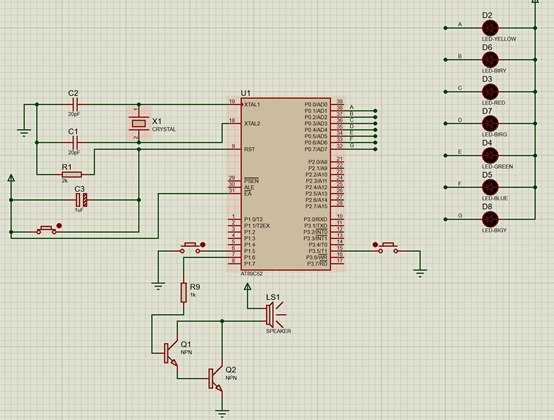
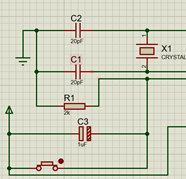
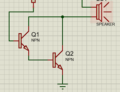
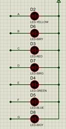

音乐展示器设计实验
实验目的
用单片机定时器的定时功能，通过改变定时器计数初值，得到各种不同音频频率，经I/O口输出就能产生美妙悦耳的音乐。
实验原理
要产生音频脉冲，只要算出某一音频的半周期，然后利用定时器计时此半周期的时间，每当定时器计数到位后就将输出音频脉冲的I/O口反相，此法不断重复，就可在I/O脚产生音频脉冲。
利用单片机 89C51/S51的内部定时器，让其工作在定时模式下，改变计数初值TH0、TL0，就可以产生不同的频率。设定好每个音符对应的节拍，调用延时程序，控制音乐节奏。
将所要演奏的歌曲编译成特定的数组，再编译好各音符频率和计算初值的对照表。按顺序启用定时器播放音符，即可演奏乐曲。
实验要求
- 通过按钮控制单片机开始播放和停止播放音乐
- 自行设计一段音乐，并让单片机成功运行
参考电路
复位电路：实现程序复位功能
三极管驱动蜂鸣器电路：借助三极管通过基极导通，实现蜂鸣器驱动
音符显示灯组（每个灯亮起都对应了不同的音符）
元件清单
- NPN型三极管
- 无源蜂鸣器（Speaker）
- 不同颜色的LED
- 电阻(RES)
- 按钮(Button)
代码详解
//引脚定义部分 #includesbit beep=P1^6;//蜂鸣器 sbit s1=P1^5;//播放 sbit s2=P3^5;//停止播放 sbit P_1=P0^1;//彩灯控制 sbit P_2=P0^2; sbit P_3=P0^3; sbit P_4=P0^4; sbit P_5=P0^5; sbit P_6=P0^6; sbit P_7=P0^7; unsigned char timer0H,timer0L,time=1,b; unsigned char a[]={1,1,1,1,1,1,1};//彩灯控制数组 //音符控制数组，元素对应不同八度音调所需的定时器值 code unsigned char FREQH[]=//四个八度-高八位 { 0x00,0xF2,0xF3,0xF5,0xF5,0xF6,0xF7,0xF8,//低音1234567 0xF9,0xF9,0xFA,0xFA,0xFB,0xFB,0xFC,//1234567i 0xFC,0xFC,0xFD,0xFD,0xFD,0xFD,0xFE,//高音234567 0xFE,0xFE,0xFE,0xFE,0xFE,0xFE,0Xff//超高音1234567 }; code unsigned char FREQL[]=//四个八度-低八位 { 0x00,0x42,0xC1,0x17,0xB6,0xD0,0xD1,0xB6, //低音1234567 0x21,0xE1,0x8C,0xD8,0x68,0xE9,0x5B, //1234567i 0x8F,0xEE,0x44,0x6B,0xB4,0xF4,0x2D, //高音234567 0x47,0x77,0xA2,0xB6,0xDA,0xFA,0x16/超高音1234567 }; code unsigned char music [ ]= 歌曲编码 三位数字代表一个音符，第一位为第几个音符，第二位为第几个八度，第三位为节奏（以半拍为单位）。 }; //定时器中断初始化 void t0int() interrupt 1//中断程序，控制音调 { TR0=0;//先关闭T0 beep=!beep;//输出方波，发音 TH0=timer0H;//下次中断定时，可以控制音调高低 TL0=timer0L; TR0=1; //启动T0 } void delayms(int n)//毫秒延时程序 { unsigned int i,y; for(i=n;i>0;i--) { for(y=114;y>0;y--); } TR0=0; } //音乐延时程序，控制音符持续时间 void delay(unsigned char t) //延时程序，控制发音时间长度 { unsigned char t1; unsigned long t2; for(t1=0;t1 < t;t1++)//延时t个半拍 { for(t2=0;t2 < 4000;t2++);//延时中，此时段中断程序发音 } TR0=0; } //音符演奏函数 void play()//演奏音符 { TH0=timer0H; //控制音调 TL0=timer0L; TR0=1; //启动T0，输出方波发音 delay(time); } void LED()//点灯 { P_1=a[1]; P_2=a[2]; P_3=a[3]; P_4=a[4]; P_5=a[5]; P_6=a[6]; P_7=a[7]; } //主程序，在住循环内监测播放/停止按钮是否按下，调用中断函数 void main(void) { int i=0; unsigned char k,flag=0; TMOD=1; //工作方式1 ET0=1; //T0中断 EA=1; //开总中断 while(1) { i=0; if(s1==0) //音乐是否播放 { delayms(10); if(s1==0) { flag=1; } } while(flag!=0&&i < 594) //未按停止键，且未演奏完。 { k=music[i]+7*music[i+1]; //音符及对应八度 b=music[i]; //点灯位置 a[b]=0; //点灯 LED(); if(k!=0) { timer0H=FREQH[k]; //由频率数值确定定时初值 timer0L=FREQL[k]; time=music[i+2]; //节奏长短，即几个半拍 i+=3; play();//发音 a[b]=1; //关灯 LED(); } else { time=music[i+2]; delay(time); i+=3; } if(s2==0) //音乐是否停止 { delayms(10); if(s2==0) { flag=0; } } } delayms(2000); //下一次循环演奏2s } }
评论区